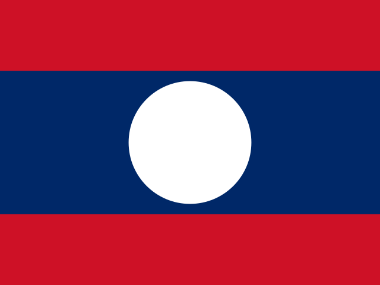

Λάος · Laos: επιβεβαιωμένες ειδήσεις και κίνδυνος
Νοτιοανατολική Ασία · 18 γεγονότα · Τελευταία κάλυψη 30 Οκτ
| 18 Οκτ | 0 |
|---|---|
| 19 Οκτ | 0 |
| 20 Οκτ | 0 |
| 21 Οκτ | 0 |
| 22 Οκτ | 0 |
| 23 Οκτ | 0 |
| 24 Οκτ | 0 |
| 25 Οκτ | 0 |
| 26 Οκτ | 0 |
| 27 Οκτ | 2 |
| 28 Οκτ | 0 |
| 29 Οκτ | 1 |
| 30 Οκτ | 0 |
| 31 Οκτ | 0 |
Με λίγα λόγια
Λάος · Laos: εμφανίζεται σε 18 γεγονότα στο ATHENA, σε 8 από τις δέκα ενότητες. Κανένα δεν έχει υψηλό κίνδυνο.
Ανά ενότητα
Επιχειρήσεις · 5Εμπόριο & Βιομηχανία · 3Οικονομία & Αγορές · 2Ενέργεια & Περιβάλλον · 2Υγεία & Επιστήμη · 2Κοινωνία & Δίκαιο · 2Αθλητισμός · 1Πολιτισμός & Πρόσωπα · 1
Τα σημαντικότερα γεγονότα
- Οικονομία & ΑγορέςAIIB keen to fund Northern Metropolis, with loans viewed as key endorsementΚίνδυνος 0.0 · 25 Οκτ
- ΕπιχειρήσειςBelt and Road Green Innovation Conference 2026 opens in Hong KongΚίνδυνος 0.9 · 28 Οκτ
- Εμπόριο & ΒιομηχανίαSmart, green and service-oriented: Canton Fair mirrors new momentum in China's foreign tradeΚίνδυνος 0.0 · 30 Οκτ
- Ενέργεια & ΠεριβάλλονCOP17 | Jiangsu Showcases Biodiversity Conservation in ActionΚίνδυνος 0.0 · 30 Οκτ
- Ενέργεια & ΠεριβάλλονDayOne and Sembcorp to Explore Integrated Power and Energy Solutions for Data Centers in AsiaΚίνδυνος 0.0 · 30 Οκτ
- Οικονομία & ΑγορέςBudget 2026: John Healey announces £100 energy payment for households, minimum wage rise, and £7.5m for AI and cyber in BelfastΚίνδυνος 0.0 · 29 Οκτ
- Κοινωνία & ΔίκαιοOne Earth Summit Unites Global Leaders to AdvanceΚίνδυνος 0.0 · 30 Οκτ
- Κοινωνία & ΔίκαιοGrades Versus Experience: SIM Explains What Students Should Consider When Preparing for Their First JobΚίνδυνος 0.0 · 30 Οκτ
- ΕπιχειρήσειςNineSmart Showcases AI-Powered Work Order Management Solution at HKTDC Hong Kong Electronics Fair (Autumn Edition)Κίνδυνος 0.0 · 29 Οκτ
- Πολιτισμός & ΠρόσωπαSingapore thrived on chokepoints. Now they’re a threatΓενικές ειδήσεις · 29 Οκτ
Χώρες στα ίδια γεγονότα
Σλοβενία · SloveniaΚίνα · ChinaΗνωμένο Βασίλειο · United KingdomΧονγκ Κονγκ ΕΔΠ Κίνας · Hong KongΙνδονησία · IndonesiaΗνωμένες Πολιτείες · United States
Τοπικές ειδήσεις: Λάος · Laos
Φόρτωση…